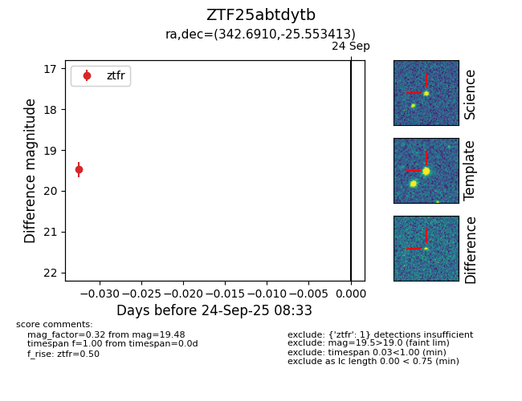

FINK: ZTF25abtdytb
Lasair: ZTF25abtdytb
ALeRCE: ZTF25abtdytb
ZTF25abtdytb (ztf,fink)
equatorial (ra, dec) = (342.6910,-25.55341)
galactic (l, b) = (29.3680,-62.98230)

last ztfr=19.48
1 ztfr detections